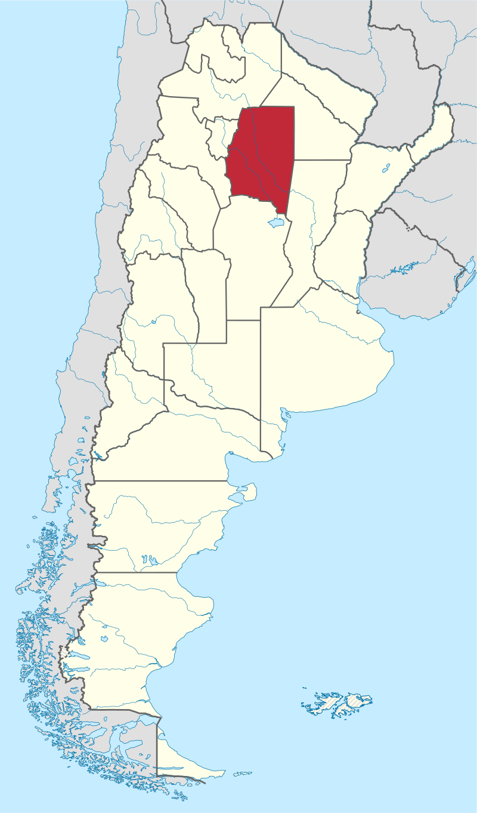
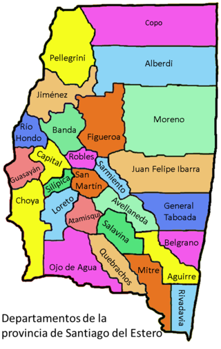
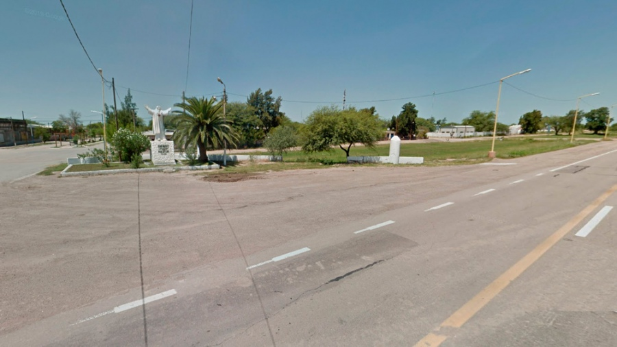
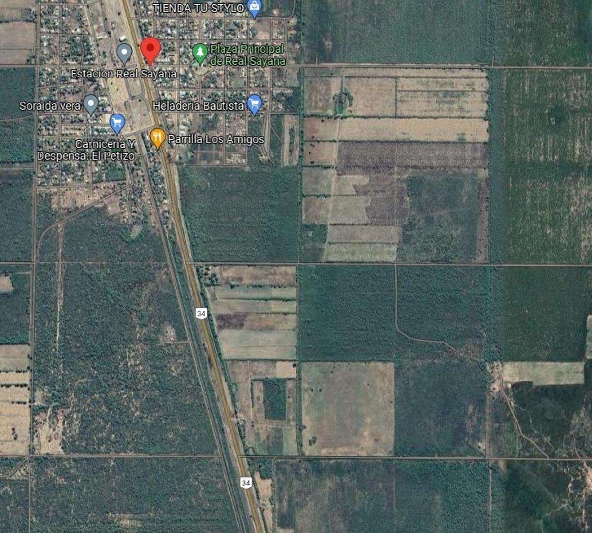

Santiago del Estero, llamado turísticamente en Argentina como Santiago, es una de las 23 provincias que integran la República Argentina. A su vez, es uno de los 24 estados autogobernados o jurisdicciones de primer orden que conforman el país, y uno de los 24 distritos electorales legislativos nacionales. Su capital y ciudad más poblada es la homónima Santiago del Estero. Está ubicada al norte del país, en la región del Norte Grande Argentino, limitando al norte con Salta y Chaco, al este nuevamente con Chaco y Santa Fe, al sur con Córdoba y al oeste con Catamarca y Tucumán.
 | HISTORIA | UBICACION |
| UBICACION | 26 años |
Real Sayana es una localidad argentina ubicada en el Departamento Avellaneda de la Provincia de Santiago del Estero. Se encuentra sobre la Ruta Nacional 34, la cual es su principal vía de comunicación vinculándola al noroeste con Colonia Dora y al sudeste con Casares
 